Nyzo version 523 (commit on GitHub) introduces the Nyzo client.
This version affects the client, verifier, and sentinel. The changes to the verifier and the sentinel are inconsequential side effects of changes made in the implementation of the client.
Please realize that this is a minimal version of the client. It does not yet allow sending of transactions. Its tracking of the blockchain is limited and does not yet include any attempt to establish a full history of the blockchain. These limitations will be addressed in future versions.
In ChainInitializationManager, the bootstrapResponses map has been changed to the concurrent version.
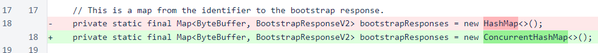Three of the methods used on the initialization process have been narrowed in visibility from public to private. Synchronization has also been removed from one of them; it is no longer necessary due to use of the concurrent hash map. The initialization process that was previously in the Verifier has been encapsulated in the initializeFrozenEdge() method. This was done to allow both the client and verifier to access this code, and it is what allowed narrowing of the visibility of the other methods.

In Message, the fetchFromRandomNode() method has been refactored to allow different behavior in the sentinel and client. This is useful because they each use their own method of tracking which nodes are in the mesh.
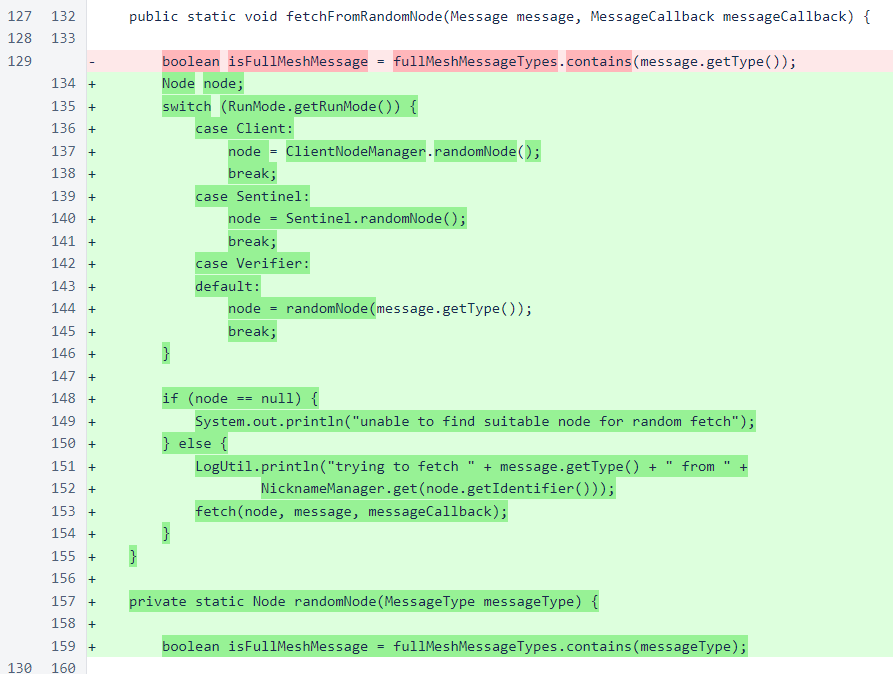In MessageQueue, the log statement has been changed to use the new LogUtil class.
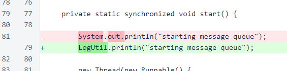The RunMode enumeration tracks whether the code is running as verifier, sentinel, or client. This is currently used only in the LogUtil class and in the Message.fetchFromRandomNode() method, but it will likely be useful in other places in future versions.
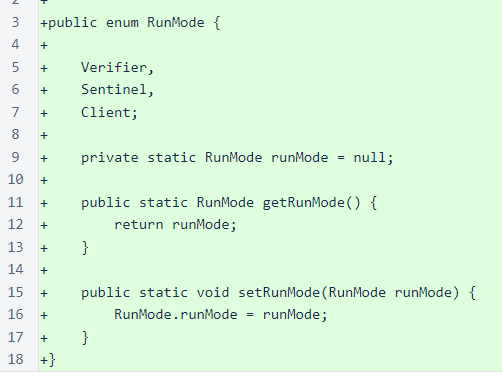In Verifier, the run mode is set just before the start() method is called. The main() method of the Verifier class is the default entry point of the jar file. This is why the run mode is not set at the top of the main() method as it is in the sentinel and client.
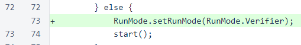The frozen-edge initialization code that was moved to the ChainInitializationManager class is now accessed through the appropriate method call.
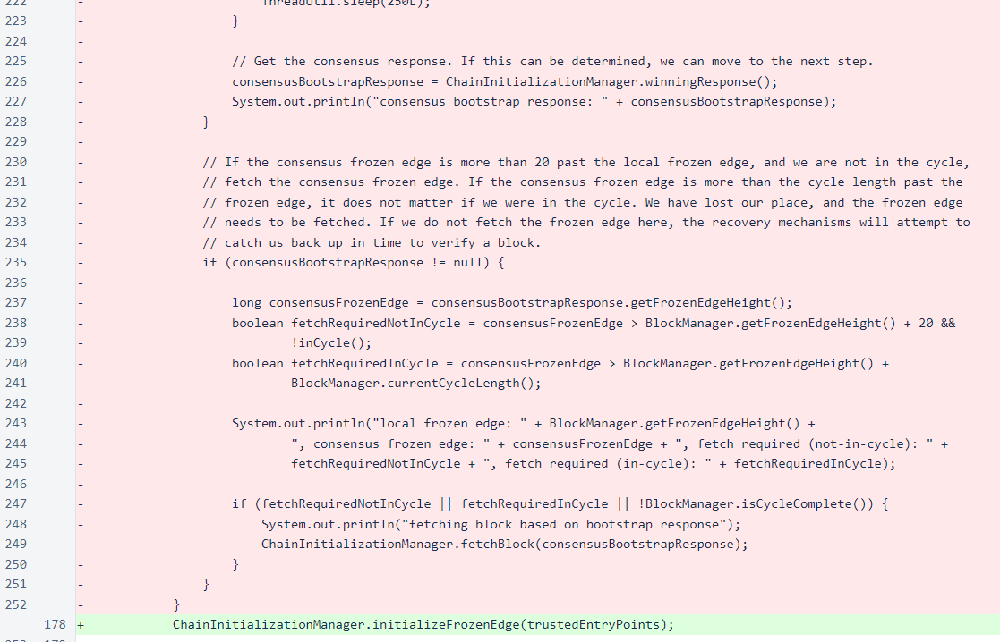Visibility of the getTrustedEntryPoints() method has been changed to allow access from ClientDataManager.
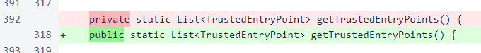The client is a simple interactive console application. The program loop asks for which command to run and then collects the necessary arguments and dispatches them to the appropriate command handler. As more functionality is added to the client, it will be encapsulated in separate command handlers for each task.
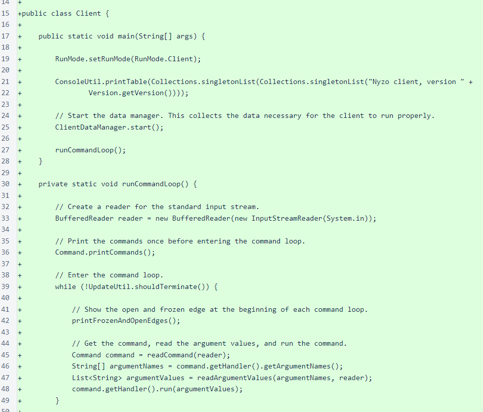The ClientDataManager tracks the mesh and blockchain for the client. Use of a democratic process for the Genesis block in addition to the frozen edge means that the client should be able to connect, without modifications, to any Nyzo-based blockchain.

The ClientNodeManager manages mesh information for the client. The verifier, sentinel, and client all need different node managers because they all have different relationships with the mesh. The verifier is an active participant in the mesh. Neither the sentinel nor the client are participants in the mesh, so they must rely on verifiers for mesh information. The sentinel has a fully-trusted relationship with all the verifiers it queries for mesh information, but the client does not.
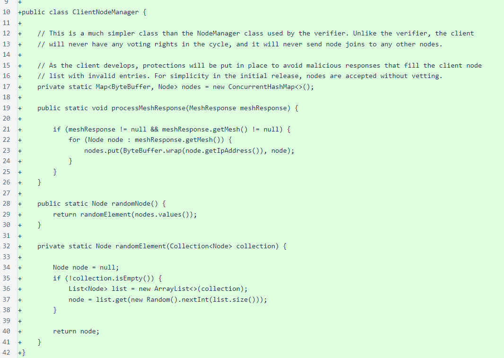The Command enumeration is a wrapper for the command handlers. Currently, only four commands are included, and three of those are system commands (i.e., not actual tasks). The only useful command in this version is balance. In the lines commented out, you can see some of the other commands currently in development.
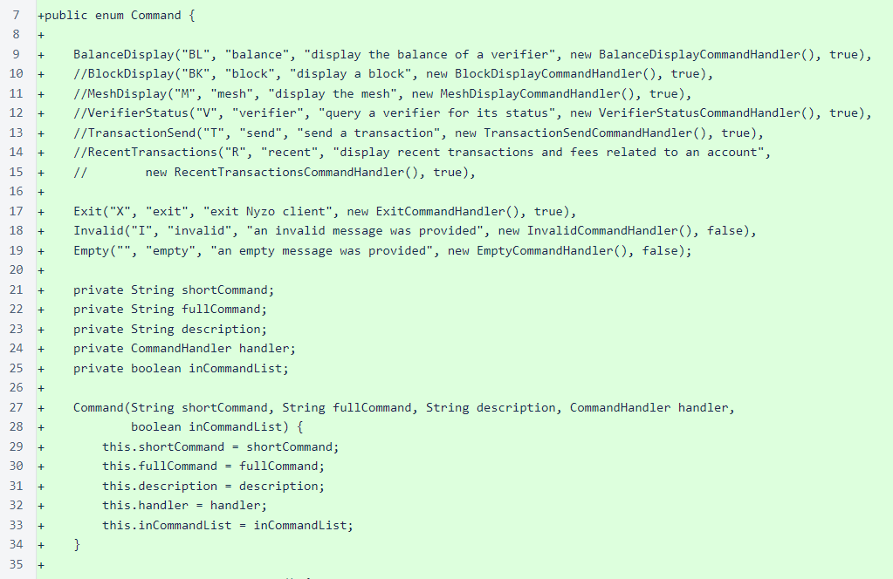The ConsoleColor enumeration provides simple ANSI console coloring. This is disabled by default, as non-ANSI consoles display erroneous characters for ANSI color commands. To enable this functionality, place the line enable_console_color=1 in /var/lib/nyzo/production/preferences.
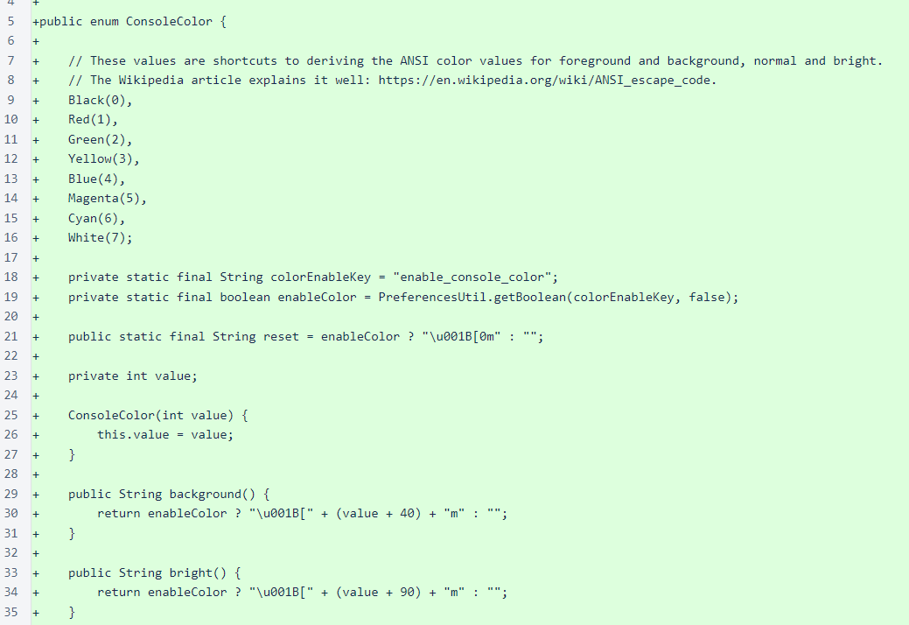The ConsoleUtil class provides a simple mechanism for printing tables of data.
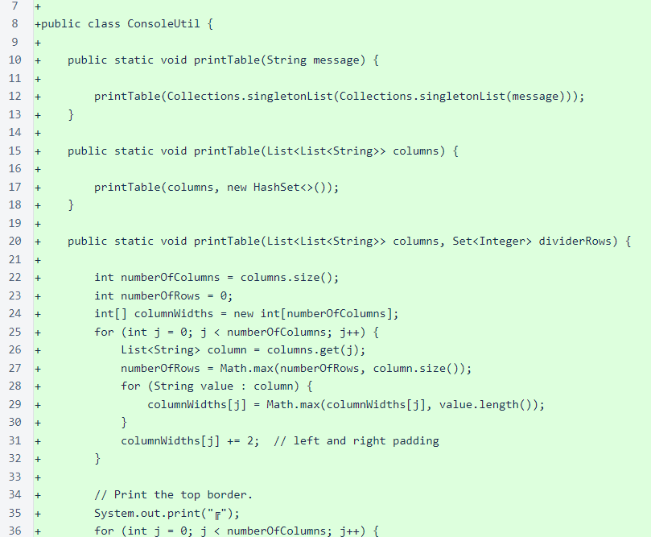The BalanceDisplayCommandHandler displays the balances of accounts with a specified prefix at the current local frozen edge. This is the only command handler of utility in this version of the client.
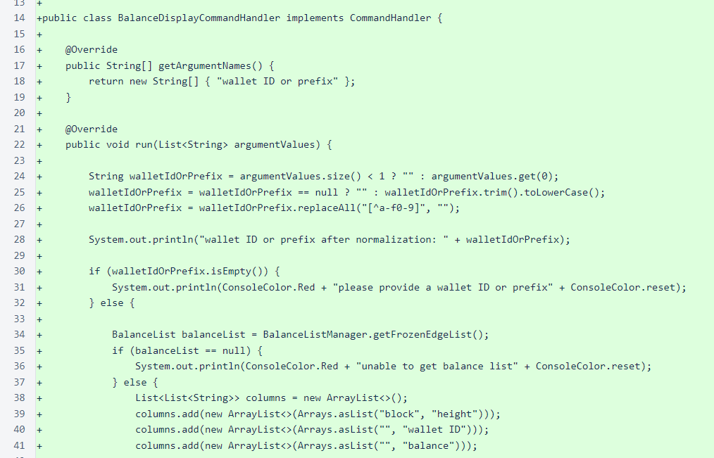The CommandHandler interface will be used for all the commands in the client. Separation of the argument names from execution of the handler will allow different interfaces, including a web interface, to share the same command handler.
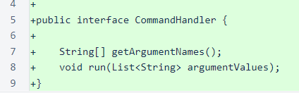The EmptyCommandHandler prints the available commands if no command is provided.
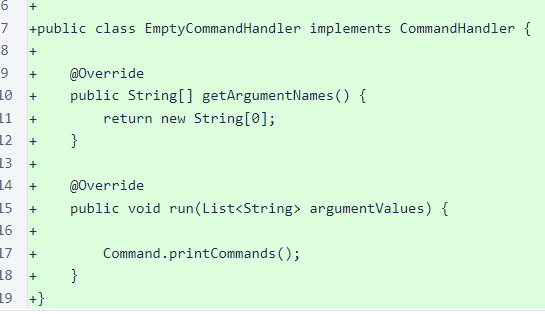The ExitCommandHandler terminates the client.
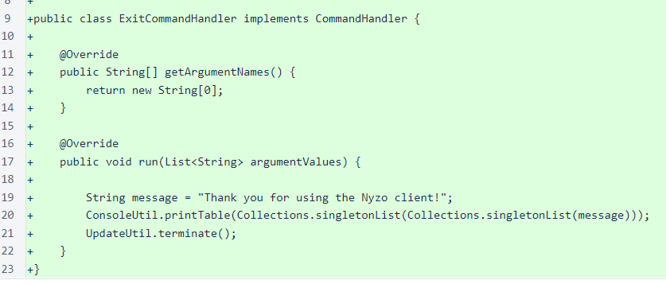The InvalidCommandHandler is similar to the EmptyCommandHandler, but it also provides feedback that an invalid command was provided.

The sentinel, like the client, sets the run mode at the top of the main() method.
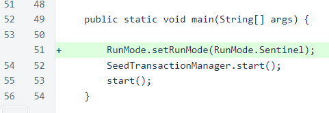The sentinel block-with-votes fallback now uses the run-mode-aware Message.fetchFromRandomNode() method.
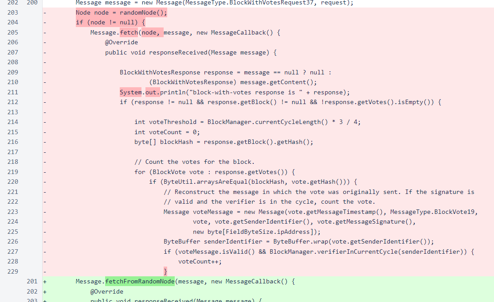The randomNode() method has been changed to public visibility to allow access from the Message class.
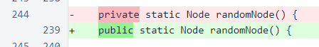The LogUtil class suppresses console output for messages in the client run mode. Like some other classes introduced in this version, this class is little more than a placeholder for planned future functionality.
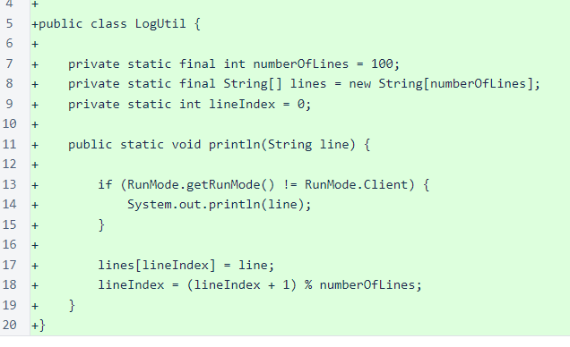PreferencesUtil has a new getBoolean() method. This method is used by ConsoleColor to activate the color codes.
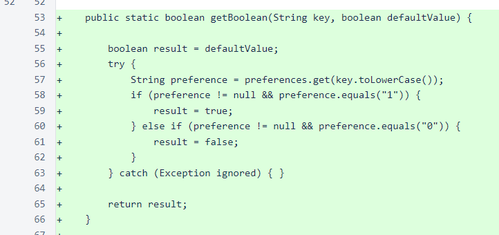To use the client, follow the installation instructions for the verifier. Then, run the following command from the nyzoVerifier directory:
sudo java -jar build/libs/nyzoVerifier-1.0.jar co.nyzo.verifier.client.Client